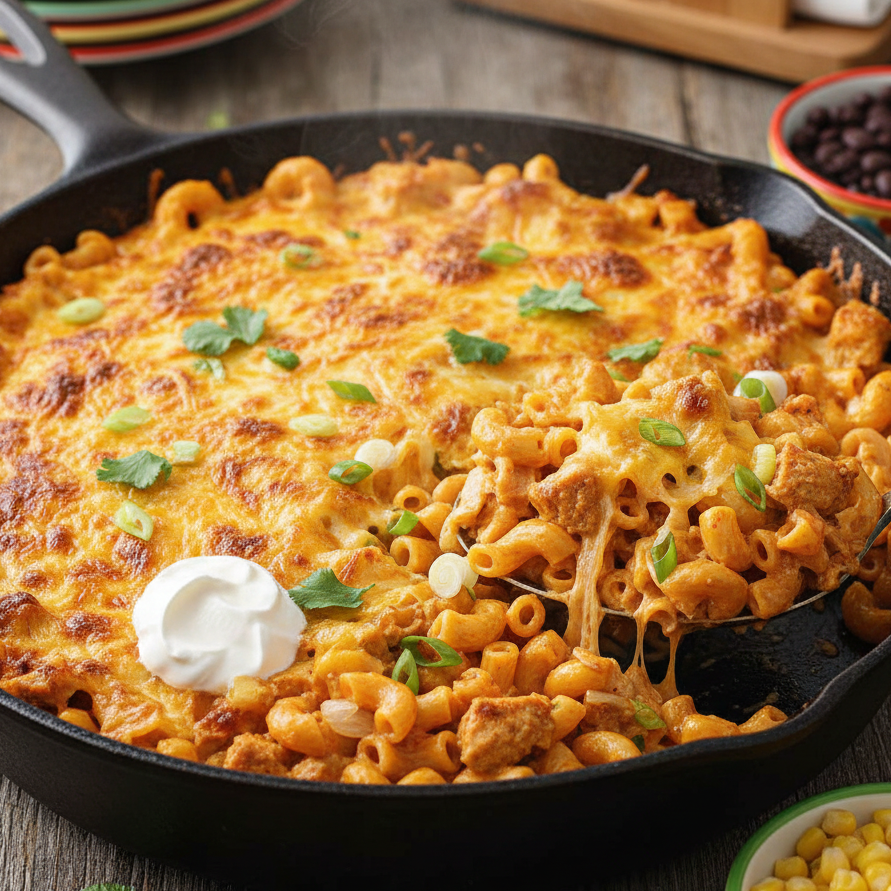

One-Pan Cheesy Chicken Taco Mac
Ingredients
- 1 lb chicken breast, cubed
- 1 small onion, diced
- Seasonings
- 1 tsp salt
- 1 tsp black pepper
- 1 tsp garlic powder
- 1 tsp onion powder
- 1 tsp paprika
- 1 tsp cumin
- 1 tsp chili powder
- 1/2 tsp smoked paprika (optional)
- 1/4–1/2 tsp red pepper flakes (optional)
- 1 tbsp jarlic (jarred minced garlic)
- 1 can mild Rotel
- 1 (8 oz) can tomato sauce
- 2 cups elbow noodles
- 1.5 cups chicken broth
- 1/2 cup milk
- 1.5 cups freshly shredded Colby Jack cheese
- (Optional) 1/2 cup additional cheese for broiling
Instructions
- In a large skillet, add cubed chicken, diced onion, seasonings, and jarlic. Sauté until chicken begins to brown.
- Add Rotel, tomato sauce, elbow noodles, and chicken broth. Stir to combine.
- Cover and cook for 12 minutes, stirring once halfway through.
- Once pasta is cooked, add milk and Colby Jack cheese. Stir until creamy and melted.
- (Optional) Sprinkle an additional 1/2 cup cheese over the top and broil until bubbly and golden.
Notes
- Add black beans or corn to bulk up the dish.
- For extra heat, use hot Rotel or add diced jalapeños.
- Pepper Jack cheese works great if you want a spicier version.
- Leftovers thicken — add a splash of milk when reheating.
- Garnish with cilantro, sour cream, or sliced green onions.
Nutritional Information
Serving Size: 1 bowl (approx. 1/6 of recipe)
Calories: 480
Fat: 21 g
Carbohydrates: 40 g
Protein: 34 g